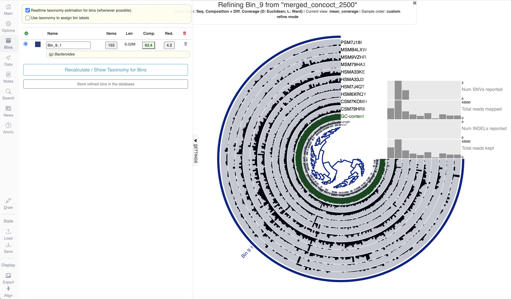
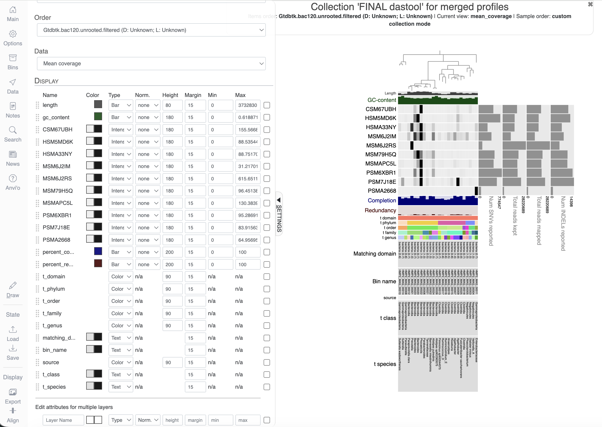
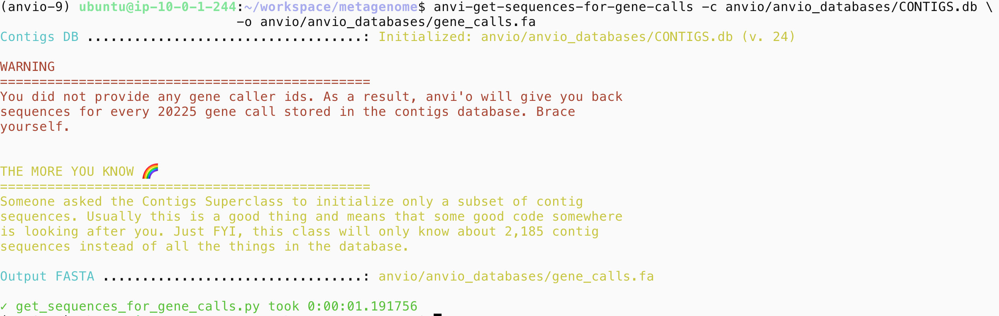
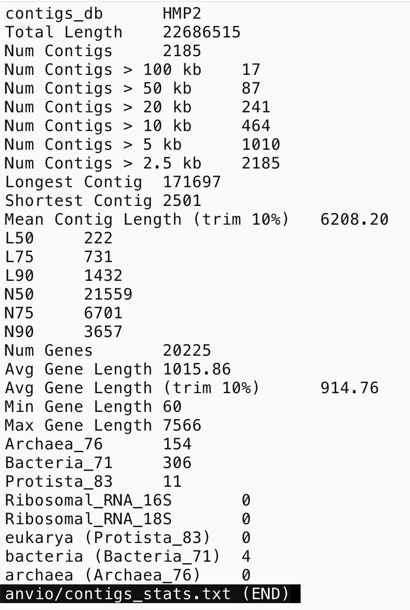

Module 4
Lab
This tutorial is part of the 2026 CBW Microbiome Analysis (held in Guelph, ON, September 15-17). It is based on the metagenomics workflows available on the Microbiome Helper and is based on previous versions written for the 2024 CBW Advanced Microbiome Analysis workshop.
Author: Robyn Wright
Overview
The main goal of this tutorial is to introduce students to the assembly of genomes from metagenomic reads (Metagenome Assembled Genomes/MAGs). There is not a one-size-fits-all pipeline for assembling MAGs. MAG assembly is incredibly computationally intensive with a lot of differen options at many steps, and so the approach here is to demonstrate the main steps involved and give you some familiarity with the methods used. At the end of this tutorial we’ve provided a few other pipelines for MAG assembly that you may wish to look into if you are looking to assemble MAGs with your own metagenome data.
Throughout this module, there are some questions aimed to help your understanding of some of the key concepts. You’ll find the answers at the bottom of this page, but no one will be marking them.
Anvi’o
Anvi’o is an open-source, community-driven analysis and visualization platform for microbial 'omics. It packages together many different tools used for genomics, metagenomics, metatranscriptomics, phylogenomics, etc. and has great interactive visualisations that can be used to help this. We are just touching the surface of what Anvi’o can do today, but the website has great tutorials and learning resources for all of its capabilities - I recommend browsing through to get some inspiration!
4.1. Initial setup
Hopefully, at the end of module 3 you were able to get MEGAHIT started. If you were, go back into your tmux session to see how it is going: tmux a
This usually takes about 2 hours to run with this data, so hopefully it is finished now! In any case, go to the next step where I explain what it is that we did there.
If you didn’t get here, open up your tmux session with tmux a and then activate the environment that we will be using:
Make sure that you are in the workspace/metagenome directory, and then symlink the data that we will be using:
4.2. Assembly of raw reads with MEGAHIT
The first step in the assembly of MAGs is the assembly of the shorter reads from sequencing into contigs. A contig is a contiguous sequence assembled from a set of sequence fragments, and there are different bioinformatic methods for assembling our reads into contigs. For this part of the tutorial, we are continuing to use reads from the same samples that we used for taxonomic annotation, but we have sub-sampled these to contain reads from only a few species, to ensure that we have the read depth required for MAG assembly while keeping the files small enough to be able to run on these small AWS instances. These are all still short reads of approximately 100 base pairs each.
We are using a tool called MEGAHIT for this assembly because it allows co-assembly of the reads from multiple samples. This means that rather than the assembly being performed separately for each sample, it is performed on all of the reads from all of the samples at the same time. In this tutorial, we will co-assemble all of the samples together, but in your own analyses you should think about what makes the most sense. Are you expecting microbial taxa to overlap between different samples? Would it make sense to find similar genomes in multiple samples? If you answered “yes” to those questions, then it might be worth thinking about co-assembly. If not, then it is probably worth assembling each sample separately. You may also want to consider assembling the samples from different treatments separately. There are methods for combining the MAGs from samples that were assembled separately into a non-redundant set of MAGs at a defined similarity threshold afterwards.
Prior to assembling your samples you would usually run quality checks and remove potentially contaminating sequences, but seeing as we skipped that during the Taxonomic annotation tutorial, we will again be skipping that here.
First, we’ll make a directory for the output to go into:
Now we’ll run MEGAHIT on our samples:
R1=$( ls mapped_matched_fastq/*_R1.fastq | tr '\n' ',' | sed 's/,$//' )
R2=$( ls mapped_matched_fastq/*_R2.fastq | tr '\n' ',' | sed 's/,$//' )
megahit -1 $R1 \
-2 $R2 \
--min-contig-len 1000 \
--num-cpu-threads 8 \
--presets meta-large \
--memory 0.8 \
-o anvio/megahit_out \
--verboseThe arguments here are:
-1- The forward reads-2- The reverse reads--min-contig-len- The minimum length in base pairs for contigs that we want to use -1000is about the minimum length that you will ever want to use, but sometimes people might increase this to e.g.2500or5000--num-cpu-threads- The number of threads to use--presets- This is for a set of parameters needed withinMEGAHIT, and meta-large is suggested for large and complex metagenomes--memory- The amount of available memory that we want to allowMEGAHITto use - this means it will use up to 80% of the memory available. Keeping this below 100% just means that we would still be able to use the Amazon instance for other things, and could be important if you’re sharing a server with other people that might also need to be carrying out some work!-o- The output folder name--verbose- MEGAHIT will print out what it is doing
If you just ran this without seeing that we said there wasn’t time unless you started it before lunch, press ctrl+c now.
And copy over the output that I already made:
mkdir anvio/megahit_out
cp ~/CourseData/metagenome/output/anvio/megahit_out/final.contigs.fa anvio/megahit_out/If you ran it yourself, a step that we’ll often do is removing the intermediate contigs to save space:
The main output at this point is a fasta file containing the contigs anvio/megahit_out/final.contigs.fa. You can take a look at this with the less command if you like (remember to press q to exit this view), and we can also count the number of contigs that we have with grep -c ">" anvio/megahit_out/final.contigs.fa.
Question 1: How many contigs are there in the anvio/megahit_out/final.contigs.fa file?
4.3. Make an Anvi’o contigs databases
First of all, we’ll run a script to reformat our final contigs file from MEGAHIT. This ensures that they’re in the right format for reading into Anvi’o in the next step:
anvi-script-reformat-fasta anvio/megahit_out/final.contigs.fa \
--simplify-names \
--min-len 2500 \
-o anvio/megahit_out/final.contigs.fixed.faTake a quick look at both anvio/megahit_out/final.contigs.fa and anvio/megahit_out/final.contigs.fixed.fa using the less or head commands to see what was changed! You can read more about the anvi-script-reformat-fasta command on this page. You should be able to see that we’re giving this command a few options (aside from obviously giving it the final.contigs.fa file from the previous step:
--simplify-names- this is simply telling the program to simplify the names of the contigs in the file - you should have seen that in the original anvio/megahit_out/final.contigs.fa file, they had a description as well as a name, and this included information that Anvi’o doesn’t need and may confuse it.--min-len- although we already used a minimum contig length of1000in the previous step, we’re further filtering here to ensure that we include only the best contigs, as well as reducing the computational time for the next steps.-o- the name of the output file.
Now that we’ve prepared the file, we can read this into Anvi’o:
mkdir anvio/anvio_databases
anvi-gen-contigs-database -f anvio/megahit_out/final.contigs.fixed.fa \
-o anvio/anvio_databases/CONTIGS.db \
-n HMP2You can read more about what anvi-gen-contigs-database is doing here, but the key parts of this are:
- -f - the input file of fixed contigs
- -o - what the output should be saved as
- -n - the name we’re giving this contigs database
Throughout the next steps, we’re going to be adding information to this contigs database.
4.4. Run HMMs to identify single copy genes
The first thing that we’re going to add to the contigs database is information on the genes within the contigs:
Because the only arguments we’ve given this are the contigs database (-c) and the number of threads to use (--num-threads), it will run the default Hidden Markov Models (HMMs) within Anvi’o. You can read more about HMMs in this paper if you’re interested, but in short, they are “statistical models that can be describe the evolution of observable events that depend on internal factors, which are not directly observable”. HMMs are often used in computational biology for predicting the function of a gene or protein; we can build HMMs using multiple sequence alignments of genes or proteins known to carry out the same function, and then we can run these HMMs against our protein (amino acid) or gene (DNA) sequences to find other proteins/genes that are likely to carry out this function. You can read about the default HMMs in Anvi’o here, but they include Bacteria_71 (71 single-copy core genes for the bacterial domain), Archaea_76 (76 single-copy core genes for the archaeal domain), and Protista_83 (83 single-copy core genes for the protists, within the eukaryotic domain).
If we had our own set of HMMs, or HMMs for specific genes of interest, we could also use these here.
This next step exports the sequences for all of the genes that we’ve identified using the HMMs to a file called anvio/anvio_databases/gene_calls.fa:
anvi-get-sequences-for-gene-calls -c anvio/anvio_databases/CONTIGS.db \
-o anvio/anvio_databases/gene_calls.faQuestion 2: How many genes were identified?
4.5. Identify taxonomy of single-copy genes
Next, we want to add taxonomy informatio to our single-copy core genes (SCGs) in the contigs database. To do this, Anvi’o uses it’s own version of the GTDB database, which we did have to setup before.
4.6. Map samples onto contigs with Bowtie2
The next steps are going to generate abundance profiles of our contigs within the samples - these will help us to bin the contigs together into groups that have similar abundance profiles and are therefore likely to come from the same genome.
The first step here is to build a Bowtie2 database/index of our fixed contigs:
bowtie2-build anvio/megahit_out/final.contigs.fixed.fa anvio/megahit_out/final.contigs.fixed --threads 4You can see that here we just have two positional arguments - the file name for the fasta file that we want to use, and the prefix to use for the Bowtie2 index If you look at the files in anvio/megahit_out/ now, you should see six files with this prefix and the file extension .bt2. These files are what Bowtie2 will use in the next steps for mapping the samples to the contigs index.
Now we’re going to make a file containing all of the sample ID’s that we’re using:
printf 'CSM79HR8\nHSM7J4QT\nMSM79HA3\nPSM7J18I\nHSM6XRQY\nHSMA33KE\nMSMB4LXW\nCSM7KOMH\nHSMA33J3\nMSM9VZHR' > sample_ids.txtAnd then we can use this to loop through each of the samples using a for loop, performing the same actions on the files for each sample:
mkdir anvio/bam_files
for SAMPLE in `awk '{print $1}' sample_ids.txt`
do
# 1. do the bowtie mapping to get the SAM file:
bowtie2 --threads 4 \
-x anvio/megahit_out/final.contigs.fixed \
-1 "raw_data/"$SAMPLE"_R1_subsampled.fastq.gz" \
-2 "raw_data/"$SAMPLE"_R2_subsampled.fastq.gz" \
--no-unal \
-S anvio/bam_files/$SAMPLE.sam
# 2. convert the resulting SAM file to a BAM file:
samtools view -F 4 -bS anvio/bam_files/$SAMPLE.sam > anvio/bam_files/$SAMPLE-RAW.bam
# 3. sort and index the BAM file:
anvi-init-bam anvio/bam_files/$SAMPLE-RAW.bam -o anvio/bam_files/$SAMPLE.bam
# 4. remove the intermediate BAM file that is no longer needed:
rm anvio/bam_files/$SAMPLE-RAW.bam
doneHopefully you either remember about for loops from the pre-work or you already have some experience with them! Otherwise, I’ll explain them briefly here.
For loops are an incredibly useful thing that we do in programming - to my knowledge, they exist in every programming language, and they allow us to repeat a section of code many times, with a different input each time. To explain what we are doing above, we can go through this step-by-step. The code is essentially saying that for each of the rows in the sample_ids.txt file, we want to: (1) run Bowtie2, (2) convert the output SAM file from Bowtie2 to a BAM file, (3) sort and index the BAM file, and (4) remove the intermediate BAM file. You can see that we give $SAMPLE in several places, as these parts will change for each of the sample names.
In each of the steps within the for loop, we are giving several options:
1. We are running Bowtie2 using the contigs index that we created -x, forward and reverse reads for this sample, -1 and -2, and the --no-unal options means it won’t output unaligned reads. We’ll then get -S as the output SAM file. SAM (Sequence Alignment MAP) files are used to store information about sequences aligned to a reference and they have 11 mandatory fields corresponding to various metrics about how well the sequence aligns to the reference. You can read more about them here.
2. samtools is being used to convert the SAM file to a BAM file. You can see that this uses the view module of samtools, which would by default print the output to the Terminal, but as we’ve added > anvio/bam_files/$SAMPLE-RAW.bam, this tells it to save the output to a file. A BAM (Binary Alignment MAP) file is a compressed, binary version of a SAM file (see more here).
3. The running of anvi-init-bam is fairly straight-forward - we are just giving it the raw BAM file and it is outputting a sorted, reindexed version.
4. Then we just remove the intermediate BAM file.
Add coverage and detection statistics to the Anvi’o profile
Now that we’ve created information on the coverage and detection of our contigs within our samples (how abundant they are and whether they appear in every sample or not), we can make Anvi’o profiles with this information:
mkdir anvio/anvio_databases/profiles
for SAMPLE in `awk '{print $1}' sample_ids.txt`
do
anvi-profile -c anvio/anvio_databases/CONTIGS.db \
-i anvio/bam_files/$SAMPLE.bam \
--num-threads 4 \
-o anvio/anvio_databases/profiles/$SAMPLE
doneNote that we’re again using a for loop to carry this out on each of our samples. The anvi-profile program quantifies coverage per nucleotide position within the contigs, and averages them per contig. It also calculates single-nucleotide, single-codon, and single-amino acid variants, as well as structural variants such as insertion and deletions and stores these data into appropriate tables.
Merge sample profiles
The command above created contig profiles for each sample individually, so now we need to merge these profiles into one single profile that we can use for clustering the contigs into bins. We’ll do this with the anvi-merge program:
anvi-merge -c anvio/anvio_databases/CONTIGS.db \
-o anvio/anvio_databases/merged_profiles \
anvio/anvio_databases/profiles/*/PROFILE.dbAnd then it’s always a good idea to have a look at some basic stats about the contigs before we go further:
anvi-display-contigs-stats --report-as-text \
--output-file anvio/contigs_stats.txt \
anvio/anvio_databases/CONTIGS.dbIf you take a look at the anvio/contigs_stats.txt file, you’ll see (you can also see these explanations here):
- Total Length - the total number of nucleotides in your contigs
- Num Contigs - the number of contigs in your database
- Num Contigs > X kb - the number of contigs that are longer than X
- Longest Contig - the longest contig in your databases (in nucleotides)
- Shortest Contig - the shortest contig in your databases (in nucleotides), hopefully this is longer than the 2500 that we set earlier!
- Num Genes (prodigal) - the number of genes that Prodigal predicts are in your contigs
- L50, L75, L90 - if you ordered the contigs in your database from longest to shortest, these stats describe the number of contigs you would need to go through before you had looked at a certain percent of a genome. For example, L50 describes the number of contigs you would have to go through before you reached 50 percent of the entire dataset
- N50, N75, N90 - if you ordered the contigs in your database from longest to shortest, these stats describe the length of the contig you would be looking when you had looked at a certain percent of a genome. For example, N50 describes the length of contig you would be on when you reached 50 percent of the entire genome length
- The number of HMM hits in your database
- The number of genomes that Anvi’o predicts are in your samples, based on how many hits the single-copy core genes got in your database
As long as we’re satisfied with all of this, then we can carry on to the clustering.
Question 3: How many contigs are there? Is this the same as what we started with? Why or why not?
Question 4: What are the longest and shortest contigs? What do you think of this?
4.7. Cluster contigs into bins
Next we will bin - or cluster - the contigs to create genome “bins”, or MAGs. To do this, we typically use information on the coverage, or abundance, of contigs within samples (that we generated in step two) and the binning algorithms will usually identify patterns in nucleotide composition or k-mer frequencies in order to group together contigs that they think are likely to have originated from the same genome.
There are several different options for this within Anvi’o, which you can see by typing in anvi-cluster-contigs -h (and this also shows you the different options that you can give to the different binning tools). We will use a few different ones, so that you can see the different results that these give, and then at the end, we’ll run DAS Tool, which combines the results of multiple binners together into an optimised, non-redundant set of bins.
We’ll use CONCOCT for this first:
anvi-cluster-contigs -c anvio/anvio_databases/CONTIGS.db \
-p anvio/anvio_databases/merged_profiles/PROFILE.db \
-C "merged_concoct_2500" \
--driver CONCOCT \
--length-threshold 2500 \
--num-threads 4 \
--just-do-itHere you can see that we’re giving a few options:
- -c - the contigs database
- -p - the profile database
- -C - the name for the resulting collection of bins to be given
- --driver - the clustering algorithm to be used
- --num-threads - the number of threads to use
- --just-do-it - ignore any warnings (like concoct being implemented experimentally into Anvi’o) and just run it anyway
And then we’ll estimate the SCG taxonomy in our bins (this is something that DAS Tool will require, but also is nice to see the taxonomy across our entire bin, rather than in each individual contig as was calculated previously in the anvi-run-scg-taxonomy command):
anvi-estimate-scg-taxonomy -c anvio/anvio_databases/CONTIGS.db \
-C "merged_concoct_2500" \
-p anvio/anvio_databases/merged_profiles/PROFILE.db \
--compute-scg-coveragesAnd then we’ll take a look at the bins that CONCOCT has given us:
mkdir anvio/clustering_summary
anvi-summarize -c anvio/anvio_databases/CONTIGS.db \
-p anvio/anvio_databases/merged_profiles/PROFILE.db \
-C "merged_concoct_2500" \
-o anvio/clustering_summary/merged_concoct_2500/Look at the summary: less -S anvio/clustering_summary/merged_concoct_2500/bins_summary.txt
Looking through the bins (the rows), you should see that there are a number of columns giving some stats on each of the bins (clusters of contigs), including:
- total_length - the total number of nucleotides in this bin
- num_contigs - the total number of contigs in this bin
- N50 - N50 is a metric widely used to assess the contiguity of an assembly, and it is defined as the sequence length of the shortest contig that covers at least 50% of the total assembly length
- GC_content - GC content (%) is the percentage of bases in the contigs that make up this bin that are either guanine (G) or cytosine (C)
- percent_completion and percent_redundancy - completeness and contamination (also called redundancy) are both important when we’re assessing the quality of the MAGs that we’ve assembled. Both scores are calculated based on the presence of the ubiquitous, single-copy marker genes - ones that all bacteria are known to possess - and the completion is a prediction of how complete the genome is likely to be, so whether it possesses a copy of all of the marker genes that are expected. The contamination/redundancy is a measure of whether those marker genes that are expected to be present in only a single copy are duplicated. Typically speaking, a MAG that has >50% completeness and <10% contamination/redundancy is considered to be reasonable, although >90% completeness is desirable. There is a good explanation on completeness and redundancy here.
Question 5: How many bins are there?
Question 6: How many bins >50% completion are there?
Question 7: What is the redundancy in these bins?
We should also have a line that looks something like this (you might need to scroll down):
Bin_9 6016304 153 61549 41.80050432702936 63.38028169014085 4.225352112676056 Bacteria Bacteroidota Bacteroidia Bacteroidales Bacteroidaceae BacteroidesWe’re going to take a bit more of a look at this one.
4.8. Interactive viewing of bins
Now we’re going to be take a look at one of the bins. Assuming your output looks similar to mine, we’ll look at Bin_9:
anvi-refine -c anvio/anvio_databases/CONTIGS.db \
-p anvio/anvio_databases/merged_profiles/PROFILE.db \
-C "merged_concoct_2500" \
-b Bin_9 \
--server-only \
-P 8081You’ll see that we’re telling Anvi’o the contigs database, profile and collection name, as well as the name of the bin we want to look at and:
--server-only
-P 8081Both of these parts are to do with Anvi’o being run on the Amazon instances rather than on our local computers. The --server-only part is telling it that we will want to create an SSH tunnel to the server, and then the -P port is telling it which port to use. This could be one of many ports, just like we are using port 8080 for accessing RStudio.
Now open up a second Terminal window and run:
Where ## is your number. It should just look like you logged into the server in a new window. Now go to http://localhost:8081/ in your browser. This should have an Anvi’o page loaded up.
If you are using Putty
Your steps for this will be a little different. After you have run the Anvi’o refine command above, you’ll need to open a new Putty window.
Click on “Session” and under “Saved Sessions”, click on the “Amazon node” and then click “Load”.
Now go to “Connection” > “SSH” > “Tunnels”. In “Source port” type in 8081. In “Destination” type in ubuntu@##.uhn-hpc.ca:8081.
Click “Add” and then click “Open”. You should see a new Putty window open. Now go to http://localhost:8081/ in your browser. This should have an Anvi’o page loaded up.
In the browser Anvi’o page
Now press the “Draw” button. You should see something that looks like a phylogenetic tree get drawn. Each branch of this is for one of the contigs that makes up the bin, and you can see information about their abundance in different samples in the rings.
Now click on the “Bins” tab and click on “Realtime taxonomy estimation for bins (whenever possible)”.
If we select the whole tree (click on it), we should see information on the completeness, redundancy, and taxonomy come up. It should look like this:

If we unselect (right click) some of the tree branches, this makes the completion, redundancy, and the length of the genome go up or down slightly.
Seeing as we’re still running other binners, we’ll leave this alone for now. Go back to your first terminal window and click ctrl+c to stop what is running.
4.9. Running the other binning algorithms
Now we’re going to run MAXBIN2 and BINSANITY on our contigs, and we’ll run the SCG estimation, too:
anvi-cluster-contigs -c anvio/anvio_databases/CONTIGS.db \
-p anvio/anvio_databases/merged_profiles/PROFILE.db \
-C "merged_maxbin2_2500" \
--driver MAXBIN2 \
--min-contig-length 2500 \
--num-threads 4 \
--just-do-it
anvi-cluster-contigs -c anvio/anvio_databases/CONTIGS.db \
-p anvio/anvio_databases/merged_profiles/PROFILE.db \
-C "merged_binsanity" \
--driver BINSANITY \
--num-threads 4 \
--just-do-it
anvi-estimate-scg-taxonomy -c anvio/anvio_databases/CONTIGS.db \
-C "merged_maxbin2_2500" \
-p anvio/anvio_databases/merged_profiles/PROFILE.db \
--compute-scg-coverages
anvi-estimate-scg-taxonomy -c anvio/anvio_databases/CONTIGS.db \
-C "merged_binsanity" \
-p anvio/anvio_databases/merged_profiles/PROFILE.db \
--compute-scg-coverages
Make sure that you’re looking at each line of code to make sure that you understand what it is doing!
And summarise these:
anvi-summarize -c anvio/anvio_databases/CONTIGS.db \
-p anvio/anvio_databases/merged_profiles/PROFILE.db \
-C "merged_maxbin2_2500" \
-o anvio/clustering_summary/merged_maxbin2_2500/
anvi-summarize -c anvio/anvio_databases/CONTIGS.db \
-p anvio/anvio_databases/merged_profiles/PROFILE.db \
-C "merged_binsanity" \
-o anvio/clustering_summary/merged_binsanity/Take a look at the summaries and compare them with what you got for CONCOCT above.
less -S anvio/clustering_summary/merged_binsanity/bins_summary.txt
less -S anvio/clustering_summary/merged_maxbin2_2500/bins_summary.txtQuestion 8: How are these different from CONCOCT?
4.10. Combining the clustering results with DAS Tool
Now finally, we’re going to combine these clustering results together using DAS Tool:
anvi-cluster-contigs -c anvio/anvio_databases/CONTIGS.db \
-p anvio/anvio_databases/merged_profiles/PROFILE.db \
-C "merged_dastool" \
--driver DASTOOL \
--search_engine "diamond" \
-S "merged_concoct_2500,merged_maxbin2_2500,merged_binsanity" \
--num-threads 4 \
--just-do-itWait… I got an error?
Why might this not work? Try looking at the help menu with anvi-cluster-contigs -h. Can you see what the issue might be?
Make sure you take a good look at the spelling and punctuation in all of the options!! And at what the error message is.
Hint
The Unrecognized parameters --search_engine is the key part here. It is suggesting that it doesn’t think --search_engine is a valid option. Can you see why that might be?
If you can’t figure it out, you can see the correct command here:
Correct command:
This was actually a real error that I had while making this workshop, and it took me a long time to realise that I had mis-typed --search-engine as --search_engine! The underscore instead of the hyphen meant it wasn’t recognised, and highlights why we often like to copy-paste commands when possible.
Once it’s run, you can create a summary of the results, as we did above:
anvi-summarize -c anvio/anvio_databases/CONTIGS.db \
-p anvio/anvio_databases/merged_profiles/PROFILE.db \
-C "merged_dastool" \
-o anvio/clustering_summary/merged_dastool/And take a look at them:
This doesn’t seem like very many bins :( that’s because we used a small subset of the reads from the original samples. Although this is fine, it is easier to demonstrate some of the subsequent steps using a larger dataset. I assembled all of the reads in these samples on our own lab server, so let’s copy across that output:
First, we can get some information about what is in this database:
anvi-db-info -c anvio_full/anvio_databases/CONTIGS.db
anvi-show-collections-and-bins -p anvio_full/anvio_databases/merged_profiles/PROFILE.dbQuestion 9: How does this compare with the previous one? Can you modify the above commands to summarise the merged_dastool collection?
And take a look at this:
At this point, it might be easier to copy this across to look at locally. So let’s look at our workspace in our browser: http://##.uhn-hpc.ca/ (remember to replace the ## with your number!) Go to metagenome/anvio_full/clustering_summary/. Right click on merged_dastool > open in new tab.
Scroll down to the Summary of Bins (28) section. It says that you can download the information as a TAB-delimited file, so go ahead and do that. Now paste this into a new Excel (or whatever you usually use for viewing spreadsheets) document - it will be useful to refer back to. If you’re in Excel, you can easily get this into columns by going to the “Data” tab > click on “Text to columns” > check “Delimited” > Next > Check “Space” > Finish.
Now when we look at the bins we should see that we have a few bins that need refining because the redundancy is >10%:
- Bin_Bin_84
- Bin_Bin_88
- Bin_Bin_9
- Bin_Bin_95
- Bin_MAXBIN__044_sub
So we’re going to take a look at these bins and refine them to get the redundancy <10%.
Start with this one:
anvi-refine -c anvio_full/anvio_databases/CONTIGS.db \
-p anvio_full/anvio_databases/merged_profiles/PROFILE.db \
-C "merged_dastool" \
-b Bin_Bin_84 \
--server-only \
-P 8081As we did before, we’ll need that second Terminal window. If it is still logged into the server, it is fine to leave it going. Now go to http://localhost:8081/ in your browser again and click on “Draw” like you did previously, and go to the “Bins” tab and click on show taxonomy for bins.
Here we can fairly clearly see two different abundance profiles split by the tree branches.
If we select the entire tree, we can see it is 98.6% complete and 11.3% redundant. Right-clicking the smaller branch to remove it immediately takes us to 97.2% and 2.8% redundancy. We can try adding a new bin and clicking on the removed section, but this doesn’t give us any completion/redundancy estimate suggesting that it isn’t complete enough for a second bin. Delete that new bin and then click “Store refined bins in database”. You should see a pop-up saying that the server is on board, and this means that you can go back to the command line and terminate.
Let’s try this with the next one:
anvi-refine -c anvio_full/anvio_databases/CONTIGS.db \
-p anvio_full/anvio_databases/merged_profiles/PROFILE.db \
-C "merged_dastool" \
-b Bin_Bin_88 \
--server-only \
-P 8081This one isn’t so straight-forward! Try going to the Main tab and clicking on Data > Detection and then clicking “Draw” again. Does this help? Go through these and try to click on the splits that look like they could reasonably come from the same genome. Once you’re happy, click on Store refined bins in database and go to the next bin with >10% redundancy. You can also do it with any that have slightly higher redundancy (i.e. above 5%) if you like. Remember that the aim is to reduce redundancy without reducing completion too much, or doing too much cherry-picking!
Go through the rest of the bins doing the same. Keep in mind that sometimes there could be two MAGs within one bin!
anvi-refine -c anvio_full/anvio_databases/CONTIGS.db \
-p anvio_full/anvio_databases/merged_profiles/PROFILE.db \
-C "merged_dastool" \
-b Bin_Bin_95 \
--server-only \
-P 8081Question 10: Are these taxa what you would have expected based on the read-based taxonomy of the samples?
Once you’ve done all of them, we want to save only the bins with completion >= 50% and redundancy <= 10%, so let’s rename the bins and make a new collection.
anvi-rename-bins -c anvio_full/anvio_databases/CONTIGS.db \
-p anvio_full/anvio_databases/merged_profiles/PROFILE.db \
--collection-to-read merged_dastool \
--collection-to-write refined_dastool \
--call-MAGs \
--min-completion-for-MAG 50 \
--max-redundancy-for-MAG 10 \
--prefix HMP2 \
--exclude-bins \
--report-file dastool_renaming_bins.txtYou can see that here we’re defining a new collection called “refined_dastool”, and we’re saying that to rename these bins as MAGs, they should be >50% completion and <10% redundancy, and we’re excluding any that didn’t meet these criteria. You can look at the file that’s created with the renamed bins if you like, to check that this did what you expected: dastool_renaming_bins.txt.
Because some of the next steps require that we have the exact same MAGs, we’re going to copy across a previously made version of this collection:
anvi-import-collection ~/CourseData/metagenome/anvio_full/collection_FINAL_dastool.txt -p anvio_full/anvio_databases/merged_profiles/PROFILE.db -c anvio_full/anvio_databases/CONTIGS.db -C FINAL_dastoolNow we’ll summarise this new collection (it hopefully should be very similar to your collection anyway!):
anvi-summarize -c anvio_full/anvio_databases/CONTIGS.db \
-p anvio_full/anvio_databases/merged_profiles/PROFILE.db \
-C "FINAL_dastool" \
-o anvio_full/FINAL_dastool_summary/And we can have a look at the bins that we’ve created. Take a look in the folder anvio_full/FINAL_dastool_summary/bin_by_bin using the ls command.
Now have a look in one of those MAG folders (anvio_full/FINAL_dastool_summary/bin_by_bin/) - you’ll see a lot of statistics, as well as a *-contigs.fa. This is a fasta file of the contigs used for each MAG, and we can use it as their genome for further analyses.
Now we’ll create a copy of these in a new folder:
mkdir MAG_fasta
cp anvio_full/FINAL_dastool_summary/bin_by_bin/*MAG*/*contigs.fa MAG_fasta/
ls MAG_fasta/You should have 26 MAGs here in the MAG_fasta folder (you can check this with ls MAG_fasta | wc -l)
Now that we have our refined MAGs, we can do anything that we like with them!
4.11. Run GTDB-tk
Another thing that we often do is make a phylogenetic tree with our MAGs. Unfortunately we don’t actually have enough RAM on these servers to do this :( but I did run this on our lab server and you can copy the results.
I ran it like this:
conda activate gtdbtk-v2.7.1 #using r232 genomes
gtdbtk de_novo_wf \
--genome_dir MAG_fasta \
-x fa \
--out_dir gtdbtk_out \
--cpus 24 \
--keep_intermediates \
--bacteria \
--outgroup_taxon p__AltiarchaeotaLet’s just copy across the final tree:
This tree actually contains all of the GTDB genomes too, so we’ll filter it to include only the taxa that we’re interested in. First, we’ll make a file containing a list of the MAG names that we want to keep in our tree:
And now we’ll use a program called gtotree to “prune” our tree:
gotree prune -i gtdbtk.bac120.unrooted.tree -f anvio_mags.txt -o gtdbtk.bac120.unrooted.filtered.tree --revertNote that without the --revert flag, the default behaviour would be to remove the taxa in our anvio_mags.txt file, rather than keep them.
If you take a look at this new tree file gtdbtk.bac120.unrooted.filtered.tree, you’ll notice that the names in the file are e.g. HMP2_MAG_00008-contigs, whereas in Anvi’o they are HMP2_MAG_00008. This is something that I probably should have changed before running the GTDB-tk tree command, but as is often the case in bioinformatics, it is easier/quicker to fix this in the output file than to rerun the tree command (which ran overnight using 24 threads on a server with 1.5 TB RAM). We can replace this part of the strings with the sed command:
What this is doing:
- -i - in-place editing of the file
- s - substitute
- -contigs - the text we want to find and replace
- // - what we want to replace the text with (nothing)
- g - that we want to replace all instances of -contigs and not just e.g. the first one (g for global)
4.12. Visualise our MAGs
Finally, we can take a look at all of the MAGs that we have made!
Let’s get an output file containing the taxonomic information so that we can view that with our MAGs:
anvi-estimate-scg-taxonomy -c anvio_full/anvio_databases/CONTIGS.db \
--profile-db anvio_full/anvio_databases/merged_profiles/PROFILE.db \
-C "FINAL_dastool" \
--compute-scg-coverages \
-o scg_taxonomy_FINAL_dastool.txtThis has some extra columns that we’re not interested in plotting, so let’s just take the ones with the MAG name and the taxonomic information:
If you look at this, you’ll also see that we have some classifications that are “None”, so let’s go ahead and replace them with the previous value each time:
awk -F'\t' -v OFS='\t' '{for(i=2;i<=NF;i++) if($i=="None" || $i=="") $i=$(i-1)} 1' scg_taxonomy_FINAL_dastool_reduced.txt > scg_taxonomy_FINAL_dastool_reduced_fixed.txtAnd then we can view this:
anvi-interactive -c anvio_full/anvio_databases/CONTIGS.db \
-p anvio_full/anvio_databases/merged_profiles/PROFILE.db \
-C "FINAL_dastool" \
--additional-layers scg_taxonomy_FINAL_dastool_reduced_fixed.txt \
--tree gtdbtk.bac120.unrooted.filtered.tree \
--server-only \
-P 8081Make sure you follow the same steps as before, checking that the second terminal window is still logged in and going to your browser.
Click on draw. The first thing that you will want to do is clicking on the “Order” dropdown menu and selecting the GTDB tree for how your MAGs are sorted (and click draw again - you will need to do this every time you make changes to show them).
Now you can play around with the view. Some things to look at:
- Switch between phylogram and circle phylogram to see which you prefer
- Reorder the data shown under “Display” by dragging the labels up and down
- Remove some of them by setting the height to 0
- Remember to press “Draw” again each time you make changes, so that they show up!
Mine looks like this at the end:

Once you are happy, you can click on export to save it!
4.13. Run CheckM
As a final verification step, we often like to also use an external program to verify the quality of our MAGs, so we’re going to run CheckM. CheckM can give us information on the quality of genomes as well as assigning taxonomy to them.
First, we’ll activate the conda environment:
Now we’ll download the CheckM databases:
Now we’ll start the predict workflow of CheckM:
checkm2 predict -i MAG_fasta/ --output_directory MAGs_checkm2_output --allmodels -x .fa -t 4 --remove_intermediatesThis will take ~10 minutes.
Once it’s finished, take a look at the quality_report.tsv:
You can copy this across to your laptop to look at it more easily if you like.
Question 11: Are these similar to what Anvi’o predicted?
Extras
If you still have time in the workshop and want to have a look, I’ve added some papers that I think are nice uses of MAGs as well as some other things that can be done with MAGs that you might want to explore.
Papers:
- Two decades of bacterial ecology and evolution in a freshwater lake
- Nitrogen-fixing populations of Planctomycetes and Proteobacteria are abundant in surface ocean metagenomes
- Recovery of nearly 8,000 metagenome-assembled genomes substantially expands the tree of life
- A genomic catalog of Earth’s microbiomes
Answers
Question 1: How many contigs are there in the anvio/megahit_out/final.contigs.fa file?
Using the grep -c ">" anvio/megahit_out/final.contigs.fa command, we can see there are 5,535 contigs (sequences) in this file.
Question 2: How many genes were identified?
When you run this, you should see the following output:

This shows us that there were 20,225 genes identified in our contigs.
Question 3: How many contigs are there? Is this the same as what we started with? Why or why not?
This should show the following output:

This shows 2,185 contigs, which is less than we started with. This is because we used a minimum length of 1,000 bp for our initial assembly and then only imported contigs >2,500 bp into Anvi’o.
Question 4: What are the longest and shortest contigs? What do you think of this?
The shortest contig is 2,501 bp, which makes sense given we’ve set a minimum length of 2,500. The longest is 171,697, which is good because this is a considerable proportion of a genome covered within a single contig.
Question 5: How many bins are there?
There are 27 bins.
Question 6: How many bins >50% completion are there?
Bin_2: 100% Bin_5: 52% Bin_9: 63%
Question 7: What is the redundancy in these bins?
Bin_2: 0% Bin_5: 5.6% Bin_9: 4.2%
Question 8: How are these different from CONCOCT?
CONCOCT has lots more bins but they are very low completeness typically. The more complete bins appear to be similar between them all.
Question 9: How does this compare with the previous one? Can you modify the above commands to summarise the merged_dastool collection?
mkdir anvio_full/clustering_summary/
anvi-summarize -c anvio_full/anvio_databases/CONTIGS.db \
-p anvio_full/anvio_databases/merged_profiles/PROFILE.db \
-C "merged_dastool" \
-o anvio_full/clustering_summary/merged_dastool/Question 10: Are these taxa what you would have expected based on the read-based taxonomy of the samples?
Yes - these all represent common gut taxa like Bacteroides, Phocaeicola, Alistipes, Fusicatenibacter and Agathobacter, all of which were in our read-based profiles.
Question 11: Are these similar to what Anvi’o predicted?
Relatively, although there are some MAGs that CheckM2 predicts to be slightly below 50% complete. The CheckM2 contamination/redundancy values are typically lower than for Anvi’o, however, there is one MAG (HMP2_MAG_00015) that CheckM2 predicts has 18.45% contamination/redundancy.